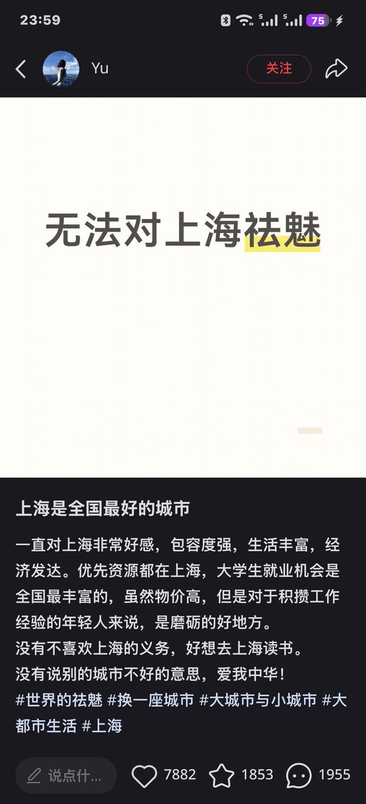

Minokakay
@Minokakay
我一直觉得搬去北上广深住，尤其是要买房的情况下，是北上广深在单方面吸你的血。因为他能给予你的，比起你把你这辈子都奉献给这座城市，太过微不足道。想象一下你996+背房贷买个房，然后你小孩天天做题过很累，等你老了你的小孩又重复你的人生，这一切有意义吗？你的人生幸福吗。

一只能天使
@Exusiai159
我却不这么想
上海在我眼里就像是一台冰冷的机械，每个人都只是拧在上面的千篇一律的螺丝，无数周而复始转动着的齿轮
尤其是在对象哥辞职以后，我抱着他躺在出租房的床上，夜不能寝，更觉得这里像是一座吃人不吐骨头的地方 https://t.co/83DTQGYu9o